SHADER DEMOS
每一頁都是一支即時運算的 shader：沒有任何外部圖片、字型或函式庫，所有畫面都由數學在你的顯示卡上當場生出來。前九頁談手法，後七頁談媒材——紙、墨、藥水、玻璃與布，如何被翻譯成程式。
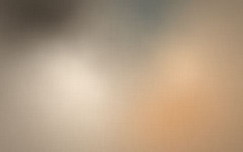
這個畫面像一張放了很久的紙，顏色在上面慢慢地互相滲透，誰也沒有贏。
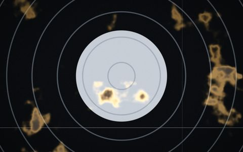
這個畫面像兩段底片在同一格上打架，誰也沒有完全輸掉，中間燒出一道金色的邊。
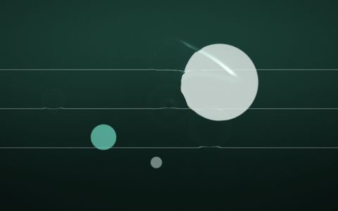
這個畫面像一池很淺的水，你的游標是手指，它會記得你剛剛摸過哪裡。
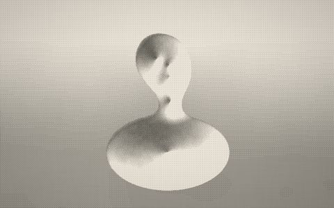
這個畫面像一張被影印了太多次的人像，它放棄了所有灰階，只剩下有墨和沒墨兩種意見。
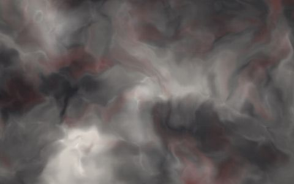
這個畫面像一塊正在流動的石頭，它比你有耐心得多。
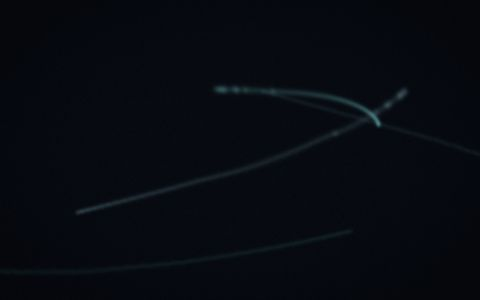
這個畫面像一個記性不好的房間，你離開以後它還會把你的樣子留著一陣子，只是每一刻都記得更模糊一點。
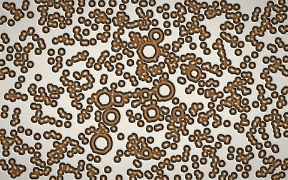
這個畫面像一塊從來沒有人見過的骨頭，它正在用兩種互相追殺的化學物質把自己長出來。
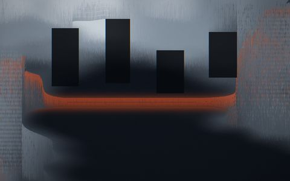
這個畫面像一張正在被強迫整理的照片，有人逼它把所有顏色按亮度排好，而它一直排不完。
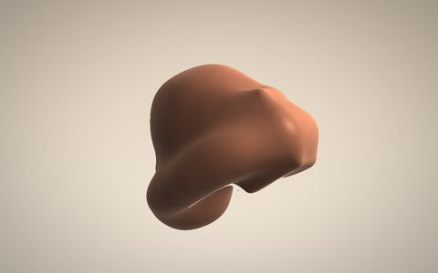
這個畫面像一件沒有人動手捏過的陶器，它只是幾個距離公式談好了要在哪裡融在一起。
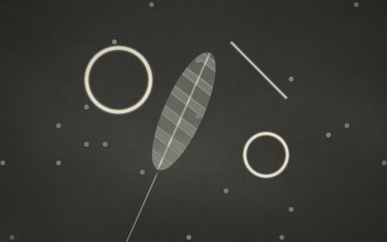
這個畫面像一張泡在顯影液裡的相紙，影像正從紙底浮上來，而且有人故意在中途開了一次燈。
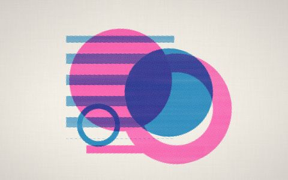
這個畫面像一張剛從孔版印刷機吐出來的海報，兩個色版沒有對準，而那正是你喜歡它的原因。
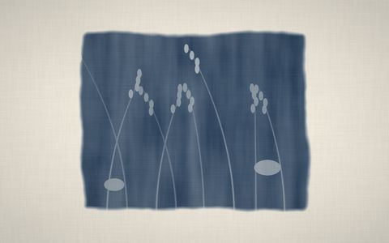
這個畫面像一張被太陽曬了二十分鐘的水彩紙，上面躺過一把草，而刷藥水的人手並不穩。
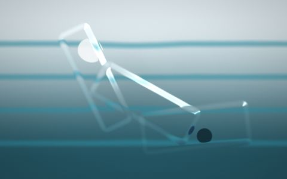
這個畫面像有人在你和風景之間放了幾片厚薄不一的玻璃，邊緣都滲出一點彩虹。
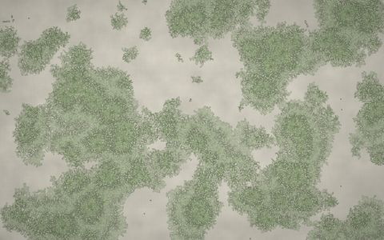
這個畫面像一塊放在戶外太久的石頭，上面的東西正在往外長，中間的部分已經開始死了。
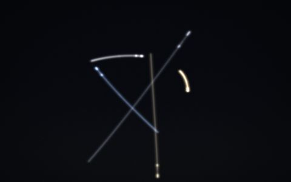
這個畫面像一張快門忘了關的夜景，所有移動過的光都還留在底片上，誰也沒有離開過。
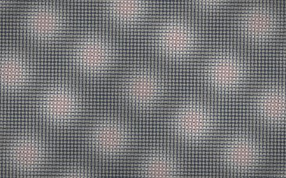
這個畫面像兩塊疊在一起的紗，角度差了一點點，於是從它們中間浮出一層誰也沒有織過的花樣。